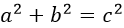

为什么用MathJax，我只放一张图：

使用MathJax，公式就可以在页面中这样显示：
\(a^2 + b^2 = c^2\)
公式显示风格完全是可以订制的。具体安装配置见文末。
\[YOURFORMULA\]或$$YOURFORMULA$$。如：
\[MYFORMULA+-*/\]\(YOURFORMULA\)。如 \(MYFORMULA+-*/\)\\(+\quad-\quad=\quad!\quad/\quad(\quad)\quad[\quad]\quad<\quad>\quad|\quad'\quad:\quad[a..z]\quad[A..Z]\quad[0..9]\quad,\quad.\\)\(+\quad-\quad=\quad!\quad/\quad(\quad)\quad[\quad]\quad<\quad>\quad|\quad'\quad:\quad[a..z]\quad[A..Z]\quad[0..9]\quad,\quad.\) \\(\alpha\quad\beta\quad\gamma\quad\pi\quad\phi\quad\varphi\\)\(\alpha\quad\beta\quad\gamma\quad\pi\quad\phi\quad\varphi\) \\(\Gamma\quad\Pi\quad\Phi\\)\(\Gamma\quad\Pi\quad\Phi\)